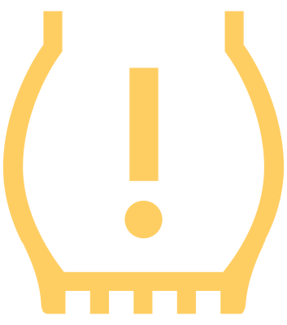

Restriction des fonctions/défaut système

clignote pendant environ 1 minute et reste allumé
Arrêtez le véhicule, coupez et remettez le contact.
Si le voyant de contrôle clignote à nouveau après le contact, il y a un problème avec le système.
Conduire prudemment et faire appel à l’assistance d’un atelier spécialisé.